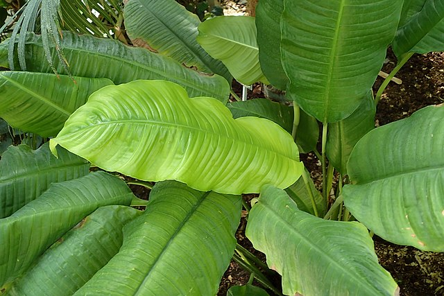

Spathiphyllum cochlearispathum
(Peace Lily)

Spathiphyllum is a genus of about 47 species of monocotyledonous flowering plants in the family Araceae, native to tropical regions of the Americas and southeastern Asia. Certain species of Spathiphyllum are commonly known as spath or peace lilies.